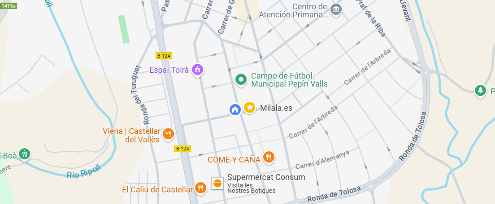

Benvinguts a Farmàcia Salut
Som una farmàcia de confiança a Castellar del Vallès, dedicada a cuidar la teva salut i benestar. Amb anys d'experiència, la nostra propietària, Iasmina Andrada, i el seu equip estan aquí per oferir-te el millor servei i assessorament farmacèutic. Farmàcia Salut és el fruit de l'esforç i la dedicació de Iasmina Andrada, una professional amb vocació farmacèutica el camí de la qual va començar fa més de 30 anys a Romania. Des de petita, la seva curiositat per la medicina i el benestar de les persones la va portar a formar-se en el sector farmacèutic. L'any 2007, la Iasmina va emigrar a Espanya, on va trobar una nova oportunitat per desenvolupar la seva passió i ajudar la comunitat amb el seu coneixement i experiència. Després d'anys de treball en diverses farmàcies, va decidir emprendre el seu propi projecte, oferint un espai on la salut i la proximitat amb els clients fossin la prioritat. Avui, Farmàcia Salut s'ha convertit en un referent a Castellar del Vallès, destacant per la seva atenció personalitzada, productes de qualitat i un equip compromès amb el benestar dels seus clients.
Els Nostres Serveis
Dispensació de medicaments
Proporcionem medicaments amb recepta i de venda lliure amb assessorament personalitzat.
Assessorament farmacèutic
El nostre equip està disponible per respondre les teves preguntes sobre medicaments i salut.
Control de salut
Oferim serveis de control de pressió arterial i glucosa.
Atenció a domicili
Brindem atenció a clients amb mobilitat reduïda.
Testimonis
"Atenció excel·lent i productes de qualitat. Molt recomanada!"
- Maria López
"Sempre trobo el que necessito i el personal és molt amable."
- Joan Pérez
"Un lloc de confiança on sempre em sento ben atès."
- Anna Garcia
On Som?
Ens trobem a Castellar del Vallès, al carrer Suïssa 20.
Telèfon: 612 123 123
Contacte
Hola!
Aquesta pàgina és propietat de Iasmina Andrada.
Estudiant de GM de Farmàcia a IES Castellarnau